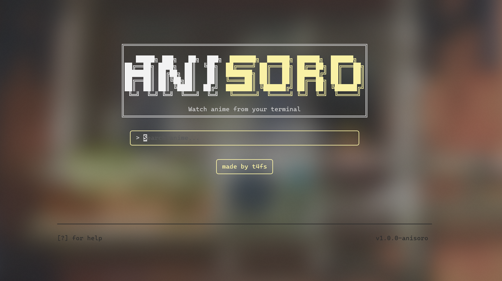

the anime terminal client — watch anime in your terminal
your terminal, but with anime

everything you need, nothing you don't
search anidb.se and browse results from your terminal — no browser needed.
toggle between subbed and dubbed episodes with a single key.
multiple sources (1080p / 720p / 360p) with automatic selection.
click the made by t4fs button to open the author's GitHub.
plays in mpv, vlc, iina, or haruna — override with ANITUI_PLAYER.
built in Go with bubbletea. Windows, Linux, and macOS.
have a question not answered here? open an issue on GitHub
Yes — aniSoroTUI is completely free and open source (GPL-3.0). No paywalls, no ads.
anidb.se. Search, episodes, and streams all come straight from anidb.se — no account needed.
Windows, Linux, and macOS (amd64 & arm64).
mpv, vlc, iina (macOS), and haruna. aniSoroTUI auto-detects your player, or set the ANITUI_PLAYER environment variable.
No — everything works with vim keys or arrow keys. The mouse is just a bonus (like the clickable credit button).
Grab the source from github.com/T4fs/aniSoroTUI and build it — the Download section has copy-paste commands for Windows, Linux, and macOS. No npm packages, no accounts, no ads.
It lives on GitHub: github.com/T4fs/aniSoroTUI — open source under GPL-3.0, built in Go with bubbletea. Stars and issues are welcome.
Search for a title, open the episode list, pick an episode, choose sub or dub, and press enter — aniSoroTUI hands the stream to mpv/vlc/iina/haruna. That's the whole flow: search, episodes, play.
Not yet — the project is brand new. The place to ask questions, report bugs, and request features is the GitHub Issues page.
one script, zero dependencies — works on a brand-new PC
copy-paste into PowerShell
irm https://raw.githubusercontent.com/T4fs/aniSoroTUI/main/scripts/install.ps1 | iex
Installs Go, builds anitui.exe, and adds an anikoto command to your PATH — no Go, git, or admin needed. Open a new terminal, then:
anikoto
Source on GitHub
copy-paste into a terminal
curl -fsSL https://raw.githubusercontent.com/T4fs/aniSoroTUI/main/scripts/install.sh | bash
Installs Go, builds anitui, and adds it to your PATH — no Go, git, make, or admin needed. Then:
anikoto
Source on GitHub
copy-paste into a terminal
curl -fsSL https://raw.githubusercontent.com/T4fs/aniSoroTUI/main/scripts/install.sh | bash
Installs Go, builds anitui (Intel & Apple Silicon), and adds it to your PATH — no Go, git, make, or admin needed. Then:
anikoto
Source on GitHub